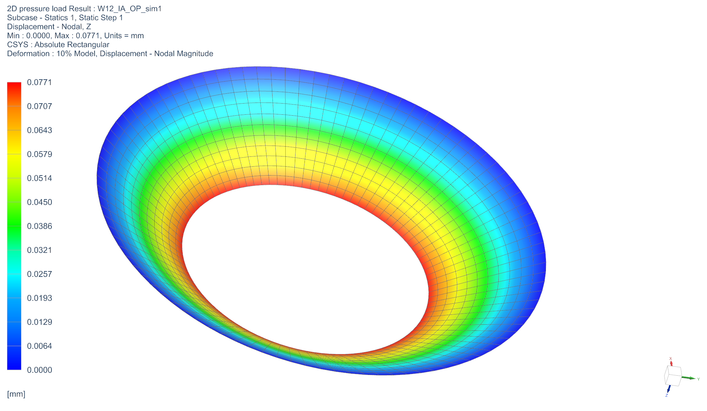

PROJECT 01
Flow Measurement and Thermal Systems Control
This project involved designing and developing a mobile incubator unit heating system.
My Contribution & Engineering Approach: I designed and tested an ASME-compliant orifice plate using 2D/3D FEA, built MATLAB tools to quantify system uncertainty, and tuned PID controllers for stable thermal performance. I wrote a full SOP for a heating-system test rig and gained hands-on experience analyzing sensor dynamics, evaluating airflow and viscosity methods, interpreting fan performance data, and machining parts from professional engineering drawings.